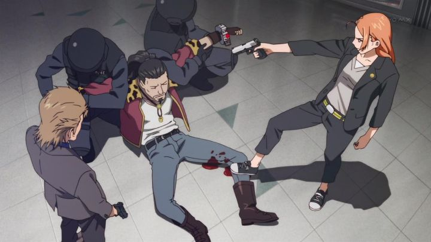

"Wizard Barristers" probably comes across as a forgettable action anime, and as such most viewers would pass on it before even watching the first episode. Certainly, that was my impression from the cover, but my tune changed when I saw a trailer of the anime, featuring some fantastic-looking action scenes. Sure enough, the animation is fantastic, and that alone makes "Barristers" worth checking out, in addition to the unique premise.The story assumes that wizards, people with magical powers, co-exist among humans in modern-day Japan, strictly prohibited from using magic unless the situation requires it. A special wizards' court handles legal cases where a wizard is accussed of using magic, typically in a crime. In this legal drama, the defense lawyers at the Butterfly Law Office are tasked with defending these cases. This is where...... wait, a legal drama?! Yep, the anime seems to be inspired by the "Harry Potter" books, but specifically "Order of the Phoenix," that super long fifth book people think of as the boring one. Both traditional(-ish) wizardry and law are rare subjects in anime, and the description should make "Wizard Barristers" stand out. Anyway, Cecil Sudo is a new employee at this law office, a half-Japanese, half-Canadian (!) girl, complete with a red and white maple-leaf bike helmit as part of her character design. Like other wizards, she has a familiar, her's being the form of a talking, cartoon toad (all the familiars appear to be perverts, curiously, making for an odd relationship between the two). Cecil's a little clumsy and careless, but is talented at her job, and her unusual ability to transform metal is especially helpful in fights, allowing her to generate a large robot for combat.... but why do you need a large robot as a lawyer? The Butterfly Law Office typically does the boring bureaucratic work you'd expect of a laywer, but sometimes defending a case requires acquiring evidence or finding witnesses, sometimes in dangerous ways. It's a bizarre setup for action to occur, where even a simple theft turns into an explosive scene of fire and lightning. Things eventually end up back to the courtroom, and the defense laywer's role is important against a strict law that typically gives clients either a life sentence or the death penalty. Extra points should be given to originality, but the story is a mixed bag. Cecil learns the ropes as a laywer, defending a variety of cases, both innocent and clearly guilty. Even when a guilty serial killer is on the stand, the defense laywer still has to do their job, an interesting development of drama. Likewise, the individual cases are somewhat interesting, with a couple unexpedcted twists. But neither really fullfill their potential, a shame compared to more successful examples of writing in other anime. Even "Ace Attorney" makes a more interesting court drama. The premise is also a little limiting to where the cases can go. And the characters themselves are a weird bag of nuts. Cecil is young and insists on wearing colorful, trendy clothing, even in the court room. Her catchphrase when about to be assulted by a criminal is "stop, and I promise I'll defend you in court," a funny line. Another new girl at the law office is super serious, another loves cute stuff and putting ketchup and whip cream on her rice, another loves gossiping about sex. The immediate boss, a man, has flamboyant blue hair and a out-of-this-world personality, while still being a strict manager to contend with. A show with virtually no likable characters, no matter how eccentric they are, makes for a boring story. The only personalities I liked were the two police-agents that tend to catch most of the criminals that go to court, but they barely get any screentime. As mentioned, the animation is fantastic... in the fight scenes, at least. There's a fair amount of action scenes, each flashy, extravagent, and well-choreographed. Truly, the scenes are on the level of feature-film quality, an incredible thing to see in a television show. At first, even the quieter scenes are also well-animated, but after the first couple episodes the quality dips a fair bit, and the action scenes reduce in quantity too. The art design is as kooky as the characters are. The background art is detailed and well-rendered, often relying on 3D models, a sharp level of quality. But the characters are a little too colorful, the fashion sense a bit too strange. Their faces also have a certain look to them... sure enough, the director is Yasuomi Umetsu, and the studio is ARMS, both known for the OVA "Kite" and "Mezzo Forte." His sense for character design might be weird, and the studio might have a penchent for porn ("Wizard Barristers" gets its share of awkward fan-service), but the director appreciates good action, and this was one of the last action series he directed (most of his resume is as just an animation-director). Music doesn't stand out too much, for better or for worse. The English dub isn't great, and the facial animation and amount of dialogue required makes it even less natural. On the other hand, Cecil's toad familiar gets a lot of frog-related puns in the dub, so good for the translators on that. "Wizard Barristers" is a strange, strange show. It's totally worth watching the first two episodes (a two-part story) for the animation alone, in a big way. The concept is unique too: who doesn't like wizards or "Law and Order"-style drama? This definitely isn't a forgettable, everyday series, but some weak writing and characterization limits its potential.
- "Ani" More reviews can be found at : https://2danicritic.github.io/ Previous review: review_Windy_Tales Next review: review_Wizards